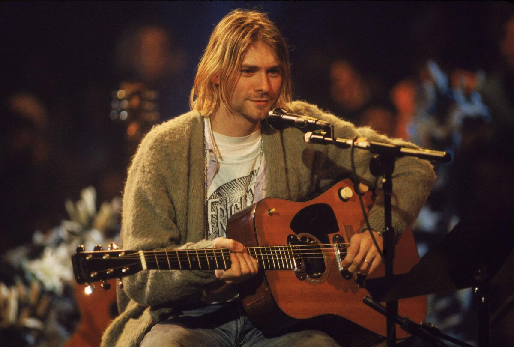

Kurt Donald Cobain (20. února 1967 Aberdeen – 5. dubna 1994 Seattle), hlavní zpěvák a kytarista skupiny. Jeho první kapela měla název Fecal Matter, založena roku 1985, kde hrál Kurt Cobain se členy Melvins. Tato punková kapela neměla dlouhého trvání, nevydali jediné album. Zachovalo se pouze neoficiální demo Illiteracy Will Prevail. Vzápětí však byla založena Nirvana, a to roku 1987. Kurt Cobain je autorem drtivé většiny skladeb Nirvany. V roce 1989 vydala své první album nesoucí název Bleach, které se moc neprosadilo – proslavilo se až po Nevermind. O dva roky později, 24. září 1991, skupina vydala průlomové album Nevermind. Album obsahovalo hity jako „In Bloom“, „Come As You Are“, „Breed“, „Lithium“ a především „Smells Like Teen Spirit“ – jeden z největších hitů devadesátých let. V roce 1993 vydala poslední studiové album In Utero, které bylo hudebně i textově mnohem propracovanější, ale neproslavilo se v takové míře jako Nevermind (pravděpodobně kvůli jeho ponurosti a agresivitě), ale vyšly z něj hity jako „Heart-shaped box“, „All Apologies“, „Rape Me“ nebo „Pennyroyal Tea“. Dne 24. února 1992 v 25 letech se Kurt Cobain na Waikiki na Havaji oženil se zpěvačkou Courtney Love ze skupiny Hole, a 18. srpna 1992 se jim narodila dcera Frances Bean Cobain.
Kurt byl několikrát hospitalizován kvůli své těžké závislosti na heroinu stejně tak jako Courtney Love. Právě kvůli ní, depresi, drogám a také nemoci žaludku (kterou nikdo nedokázal pojmenovat, natož léčit) ztrácel i tu poslední chuť žít. Dne 6. dubna 1994 ho hledali v jeho domě dva mladíci, protože se už nějakou dobu neukázal na veřejnosti, ale nevěděli, že leží v garáži mrtev, kde den předtím 5. dubna 1994 zemřel. O dva dny později ho našel elektrikář. Policie bez většího vyšetřování konstatovala smrt vlastním přičiněním. Měl brokovnicí prostřelenou hlavu, zároveň byla ale v jeho krvi zjištěna smrtelná dávka heroinu. Vzhledem ke zvláštnímu způsobu (podle některých neproveditelnému), jakým měla být sebevražda vykonána, se brzy poté vynořila řada spekulací, že byl ve skutečnosti zavražděn svojí manželkou, přičemž důvodem měl být rozvod, o který Kurt žádal. O Kurtově sebevraždě se často pochybuje právě kvůli dávce heroinu, kterou měl v krvi. Při takovém množství heroinu údajně neměl být schopen uklidit drogové náčiní do krabičky, zvednout brokovnici a namířit ji proti sobě. U jeho těla byl nalezen dopis na rozloučenou pro manželku Courtney a jeho dceru Frances adresovaný imaginárnímu kamarádovi z dětství Boddahovi: „miluju vás, miluju vás“. V dopisu kromě jiného uvedl citát z písně Neila Younga: „It’s better to burn out, than to fade away.“ – „Je lepší shořet, než vyhasnout.“ O Kurtově sebevraždě koluje nespočetně mnoho spekulací. Svou předčasnou smrtí se tak dostal do klubu 27. V rozhovoru s MTV Cobainova manželka Courtney Love tvrdila, že krátce před sebevraždou jí Kurt řekl, že už nechce být součástí kapely Nirvana.
